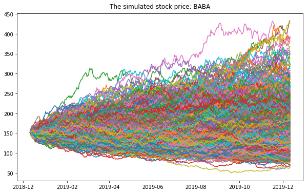

What it does
Simulates discrete-time price paths with drift/volatility and presents the results as readable visuals (paths, distributions, fans).
Why it matters
Turns abstract stochastic ideas into intuition: how tails grow, why volatility dominates, and how to reason about ranges not single numbers.
Figures
Click any image to zoom.



Notes
Old material preserved, rewritten for clarity.
Implementation
- Built with the same typography and motion system as the homepage for a seamless experience.
- Each figure answers one question; captions explain the decision insight.
- Next upgrade: add a short “methods” appendix + link to source code.